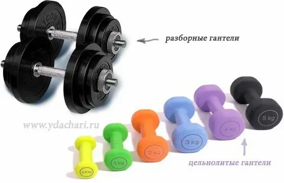

Здоровый образ жизни
Правило ЗОЖ

Занятия спортом.
1 Рекомендуется уделять физической активности не менее 30 минут ежедневно.
Отказ от вредных привычек.
Алкоголь и табак даже в небольших дозах оказывают пагубное действие на организм.
Здоровое питание.
Основой рациона должны быть натуральные продукты: фрукты, овощи, ягоды, рыба, мясо, молочные продукты, злаки. Следует отказаться от фастфуда и другой вредной еды. Последний приём пищи — за 3 часа до сна.
Здоровый сон.
. Ежедневно человек должен спать около 8 часов. Ложиться лучше до полуночи — это наиболее благоприятное время для сна.
Режим дня.
Важно правильно чередовать работу и отдых, избегать переутомлений.
Устойчивость к стрессу.
Справиться со стрессами помогут занятия любимым делом, спорт.
Закаливание организма.
Закаливание помогает организму лучше справляться с простудными заболеваниями.
Личная гигиена.
Соблюдение личной гигиены защитит от размножения микроорганизмов на коже, руках, волосах, под ногтями и в полости рта.
.webp)
Спортивные части ЗОЖ

Чем полезны подтягивания на турнике
Развитие мышц верхней части тела.
Подтягивания задействуют спину и руки, что способствует их укреплению. Сильные мышцы помогают держать ровную осанку и упрощают выполнение многих бытовых задач.
Гантели
Гантели нужны для выполнения физических упражнений с отягощениями. Они направлены на развитие мышц, укрепление суставов и общей работоспособности организма.
.webp)
Виды гантелий
Вес гантелей может варьироваться в зависимости от их вида. 2
Разборные гантели обычно имеют вес от 2 до 24 кг, но есть и более тяжёлые модели. 2 Вес можно изменить путём добавления или снятия дисков. 1
Неразборные гантели имеют неизменный вес и могут весить от 250 грамм до 30 кг. 1
Для женщин рекомендуется начинать с гантелей весом от 1 до 3 кг. Для более опытных спортсменок подойдут гантели среднего веса — от 4 до 7 кг. Если цель — набор массы и увеличение силы, то стоит обратить внимание на тяжёлые гантели — от 8 кг и выше. 2
При выборе веса гантелей важно учитывать физическую подготовку и цели тренировок. 2

Отжимания
Отжимания развивают следующие аспекты:
Мышцы верхней части тела. Упражнение задействует грудные и дельтовидные мышцы, трицепс, а также мышцы живота. Это способствует их укреплению и увеличению мышечной массы. 1
Выносливость и силу. 2 Отжимания можно считать классическим упражнением для увеличения как статической, так и динамической силовой выносливости. 3
Функциональное состояние. Упражнение благоприятно влияет на показатели дыхательной и сердечно-сосудистой систем организма. 1
Подвижность суставов. Регулярное выполнение отжиманий улучшает мобильность плечевых и локтевых суставов, а также способствует их здоровому функционированию. 1
.webp)
Прес
Несколько советов, как правильно качать пресс:
Начать с разминки. Она готовит организм к нагрузкам, повышает эффективность занятий и снижает риск получения травм. 1
Чётко следовать технике выполнения упражнений. Нарушение техники может снизить эффективность и привести к травмам. 1
Следить за дыханием. 1 Вдох делать в момент расслабления мышц, а выдох — максимального усилия, то есть поднятия ног или корпуса. 2
Выполнять тренировки на пресс до трёх раз в неделю. Отдых между занятиями должен составлять как минимум один день: его отсутствие замедлит прогресс и снизит эффективность. 1
Периодически менять упражнения. Это позволит задействовать все мышцы, держать их в напряжении и быстрее достичь результата. 1
Следить за питанием. С помощью упражнений можно накачать мышцы, но так и не увидеть пресс. Чтобы избавиться от жировой ткани в брюшной области, нужно придерживаться дефицита калорий. 1
Новичкам делать упражнения на пресс оптимально три раза в неделю: 2–3 подхода по 15–20 повторений. Дальше можно увеличивать количество тренировок до 4–5 раз в неделю по 40–50 повторений. Отдых между подходами — 30 секунд. 3
.webp)
Присидания
При выполнении упражнения работает основная часть мышц нижней части тела, что способствует развитию их силы и выносливости. Крепкие мышцы позволяют комфортно двигаться и легко выполнять бытовые задачи — например, подниматься по лестнице или вставать со стула. 1
Укрепление суставов. При соблюдении правильной техники и оптимальном дозировании нагрузки приседания способствуют здоровому функционированию коленных, тазобедренных и голеностопных суставов. 1
Улучшение кровообращения. Приседания приводят мышцы в движение и улучшают циркуляцию крови и лимфы. В процессе занятий клетки активно насыщаются кислородом и питательными веществами, что положительно влияет на их работу и общее самочувствие человека. 1
Помощь в похудении. Приседания помогают создать дефицит калорий, необходимый для безопасного и эффективного похудения. 2
Оздоровление сердца и сосудов. При выполнении приседаний организм не только тренирует мышцы, но и получает кардионагрузку. Ежедневные тренировки помогают укрепить сердце и улучшить работу сосудов. 2
Важно понимать, что похудеть от одних приседаний не получится. Чтобы сбросить лишние килограммы, необходима комплексная программа тренировок. 3
.webp)
Сверху были основные физичиские упраднения
Режим дня
это порядок чередования различных видов деятельности и отдыха в течение суток, который должен выполняться регулярно, ежедневно в одни и те же часы.
Подъём
Вставать надо всегда в одно и то же время. Просыпаться медленно, постепенно переходя от сна к бодрствованию. 1
Утренняя гимнастика.
Зарядка заряжает бодростью на предстоящий день, прогоняя остатки сна.
Личная гигиена
Приподьёме после сделаной зарядки нужно умываться и чистить зубы.
Регулярное и полноценное питание.
В среднем рекомендуется принимать пищу 3–5 раз в день.
Активный отдых на свежем воздухе.
Пешие прогулки укрепляют здоровье, повышают сопротивляемость организма к простудным заболеваниям, улучшают деятельность сердечно-сосудистой и дыхательной системы.
Достаточный и полноценный сон.
. Спать надо ложиться не позднее 22 часов, стараться соблюдать установленное время засыпания и пробуждения.
У каждого человека свои индивидуальные биоритмы, поэтому режим дня должен строиться с учётом этого фактора.
Правельное питание
Правильное питание — это сбалансированный рацион, при котором организм получает все необходимые питательные вещества с учётом возраста, пола и характера физической активности.
.webp)
Некоторые принципы правильного питания:
Энергетическое равновесие Баланс между расходом калорий и их поступлением в организм с пищей. Диетологи рекомендуют распределять калорийность дневного рациона так: завтрак — 25–30%, обед — 30–35%, ужин — 20–25%, второй завтрак, полдник, перекусы — 10–15%. 1
Сбалансированный по химическому составу рацион. Правильное соотношение: белков — 10–15%, жиров — 20–30%, углеводов — 55–70%. На практике пользуются «правилом тарелки»: 1/4 часть тарелки занимают белки, 1/4 — углеводы, 2/4 — овощи с растительным маслом.
Дробное питание. 2 Приём пищи 3–5 раз в день приблизительно в одно и то же время сбалансированными по весу порциями в 200–250 мл. Последний приём пищи — за 2–3 часа до сна.
От чего стоит отказаться: от жареного, копчёностей, солений, консервации, фастфуда, переработанного мяса (сосисок, колбас), сдобы, кондитерских изделий, кетчупа и майонеза.